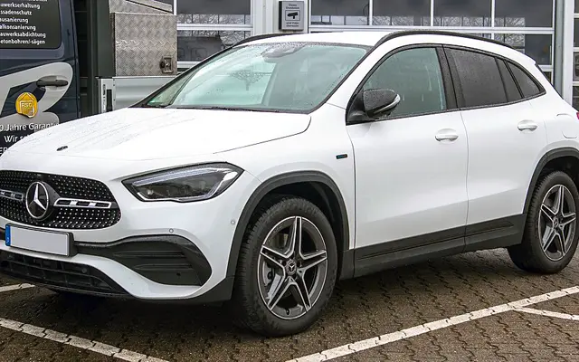

Par Motor › Precios por modelo › Mercedes-Benz GLA
Precio de segunda mano · noviembre de 2026¿Cuánto vale un Mercedes-Benz GLA de segunda mano?

Precio justo estimado de un Mercedes-Benz GLA usado en España, año por año, con los kilómetros normales para su edad y en buen estado: de 13.500 € a 44.900 €. Para tasar el tuyo con sus kilómetros reales y su estado, usa el tasador gratis.
Precios del Mercedes-Benz GLA por año
GLA X156 (2014–2019)
Precio de nuevo: GLA 180 122 CV, 31.000 € · GLA 200 d 136 CV, 35.000 € · GLA 200 156 CV, 34.000 €
| Año | Km normales | GLA 180 122 CV · Gasolina | GLA 200 d 136 CV · Diésel | GLA 200 156 CV · Gasolina |
|---|---|---|---|---|
| 2019 | 100.000 km | 15.700 € | 19.300 € | 17.300 € |
| 2018 | 100.000 km | 15.300 € | 19.000 € | 16.800 € |
| 2017 | 100.000 km | 14.900 € | 18.600 € | 16.400 € |
| 2016 | 100.000 km | 14.500 € | 17.400 € | 15.900 € |
| 2015 | 100.000 km | 14.000 € | 16.200 € | 15.400 € |
| 2014 | 100.000 km | 13.500 € | 15.000 € | 14.900 € |
GLA H247 (2020–hoy)
Precio de nuevo: GLA 180 136 CV, 37.000 € · GLA 200 d 150 CV, 42.000 € · GLA 250 e (enchufable) 218 CV, 48.000 €
| Año | Km normales | GLA 180 136 CV · Gasolina | GLA 200 d 150 CV · Diésel | GLA 250 e (enchufable) 218 CV · Híbrido enchufable |
|---|---|---|---|---|
| 2026 | 5.000 km | 38.500 € | 42.000 € | 44.900 € |
| 2025 | 20.000 km | 33.500 € | 36.600 € | 39.200 € |
| 2024 | 35.000 km | 31.600 € | 34.400 € | 36.900 € |
| 2023 | 50.000 km | 29.700 € | 32.400 € | 34.700 € |
| 2022 | 65.000 km | 28.000 € | 28.100 € | 32.700 € |
| 2021 | 80.000 km | 25.300 € | 26.100 € | 29.500 € |
| 2020 | 95.000 km | 22.300 € | 26.300 € | 26.100 € |
Kilómetros normales: 15.000 al año en gasolina, híbridos y eléctricos, y 20.000 en diésel, con un máximo de 100.000 km (por encima no tasamos: el precio depende demasiado del historial de cada coche). Cifras redondeadas a 100 €.
Preguntas frecuentes
¿Cuánto vale un Mercedes-Benz GLA de segunda mano?
Según el año, la versión y los kilómetros, un Mercedes-Benz GLA usado vale hoy de 13.500 € a 44.900 € en España. El más barato de nuestra tabla es un GLA 180 de 2014 (13.500 €) y el más caro un GLA 250 e (enchufable) de 2026 (44.900 €). Son precios justos estimados entre particulares y profesionales, con los kilómetros normales para su edad y en buen estado.
¿Cuánto valor pierde un Mercedes-Benz GLA al año?
Con unos años encima, un Mercedes-Benz GLA pierde alrededor de un 6 % de su valor cada año (calculado sobre el GLA 180 de la generación GLA H247). Los primeros años la caída es mayor y a partir de los 70.000 km se acelera.
¿Qué motorizaciones tiene el Mercedes-Benz GLA?
En nuestra base de datos hay versiones gasolina, diésel y híbrido enchufable, en 2 generaciones: GLA X156 y GLA H247.
¿Cómo sé si me piden demasiado por un Mercedes-Benz GLA?
Abre el tasador de Par Motor, elige el Mercedes-Benz GLA, el año y los kilómetros reales, y escribe lo que te piden. Te diremos si está por debajo del precio justo (chollo) o por encima (caro). Es gratis y no pide registro ni matrícula.
Otros Mercedes-Benz
- CLA
- Clase A
- Clase B
- Clase C
- Clase E
- Clase G
- Clase S
- Clase T
- Clase V
- CLK
- CLS
- EQA
- EQB
- EQE
- EQS y EQC
- GLB
- GLC
- ML y GLE
- SL y AMG GT
- SLK y SLC
Compara su coste real
El precio de compra es solo una parte. Mira cuánto te costaría al mes con combustible, seguro, neumáticos, mantenimiento y lo que pierde de valor.
Abrir el comparador →